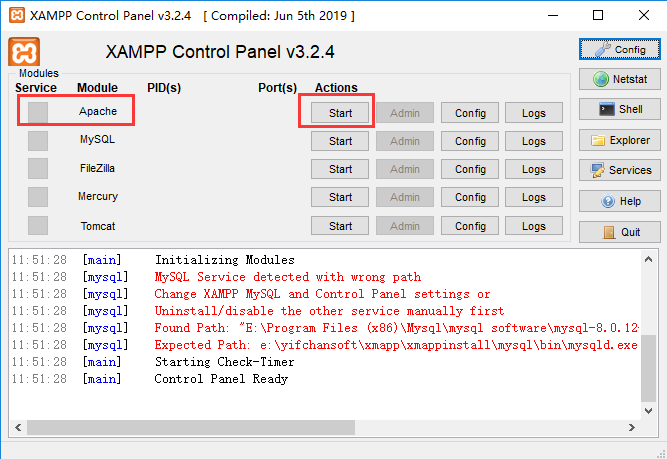
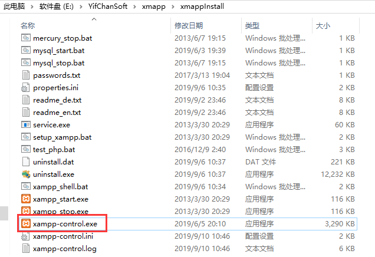
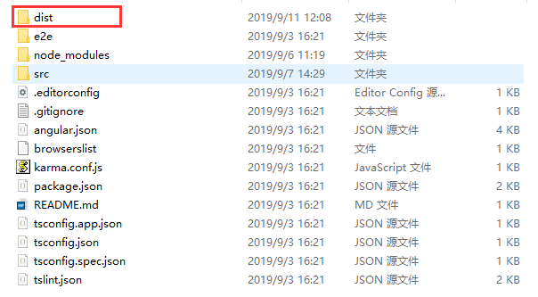
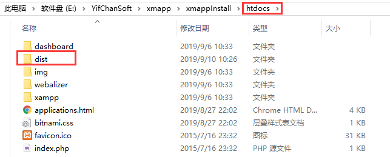
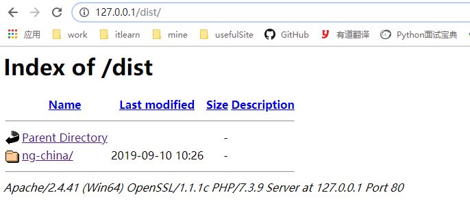
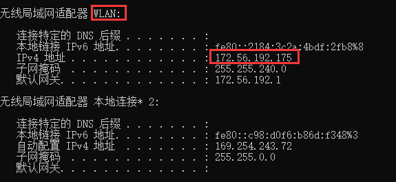

在开发angular项目时，因为需要做自适配以适应不同的屏幕，而我的电脑只有1366的。所以我现在需要在本地将angular项目运行在xampp上，然后用手机开热点，给本机和另一台大屏电脑或手机连同一wifi，再使用大屏电脑或手机打开本地电脑运行的网站查看适配情况。
下载地址：https://sourceforge.net/projects/xampp/
下载好之后，一路勾选下去就ok了，出现问题请自行百度解决。
如果你是安装好之后进行开启，那么直接在底部栏的任务中找到xampp，点击就能看到如下页面：

因为我们现在不需要用MySQL等东西，所以我们只需要开启Apache即可，如上。
或者如果你是原来就安装好了，现在想打开，那么请在你的xampp安装目录里面找到 “xampp-control.exe”，双击启动，然后如上述内容开启即可。安装目录中的开启文件如下：

将index.html中的base href改为如下内容
<!-- <base href="/"> -->
<!-- ng build时使用下面这个 -->
<base href="./">
给app.moudle.ts文件中添加如下内容
import {HashLocationStrategy, LocationStrategy} from '@angular/common';
...
providers: [ {provide: LocationStrategy, useClass: HashLocationStrategy}],
在项目下进行ng build生成包(使用git bash here)
ng build完成后可以看到项目下多出来一个dist文件，如下：

将项目中的dist文件拷贝/剪切到xampp安装目录下的htdocs文件夹下，如下：

至此，就算开启了项目的web服务器，我们可以去浏览器中进行验证
http://127.0.0.1:80/dist/在如上url下，可以看到如下的内容：

点击ng-china，这个就是我的项目，点击进去就可以看到自己写的网站了，图片如下：
使用手机给两台电脑一起开热点，或者链接同一个wifi，这样两个电脑就在同一个局域网下面了。
查看运行网站电脑的ip，注意，因为连的是wifi，此时查看的必须是WLAN的ipv4地址，使用ipconfig查看图片如下：

此时，在别人电脑上输入ip+端口+路径即可查看网站。
http://172.56.192.157:80/dist/ng-china
同理，也可以手机和电脑连同一个wifi，在手机端进行查看页面适配。